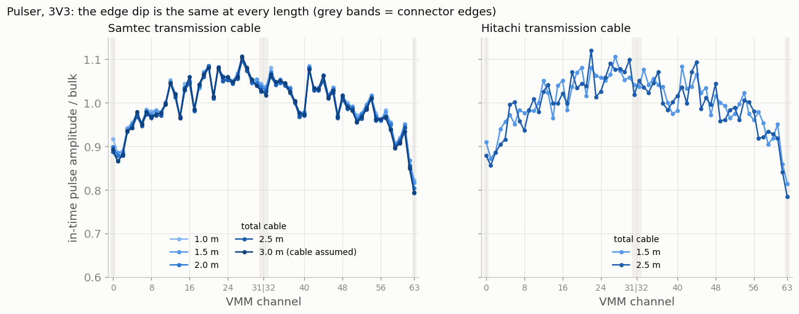
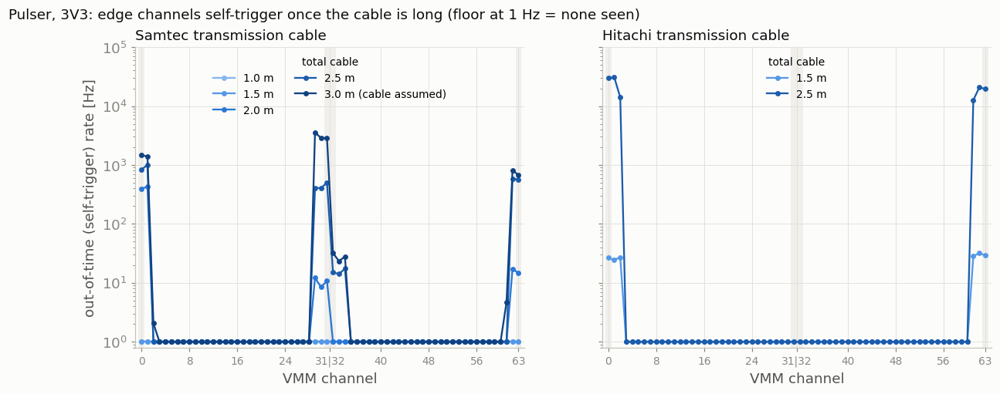
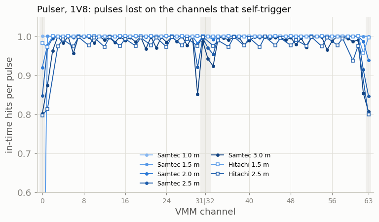
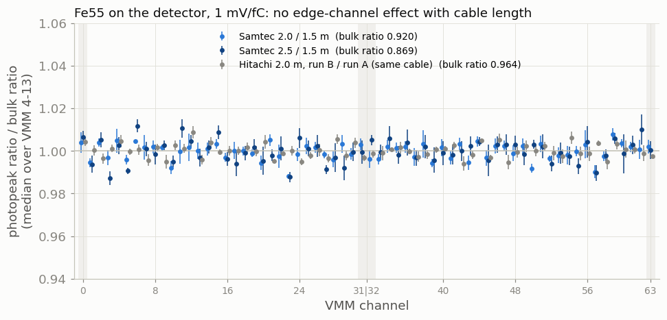
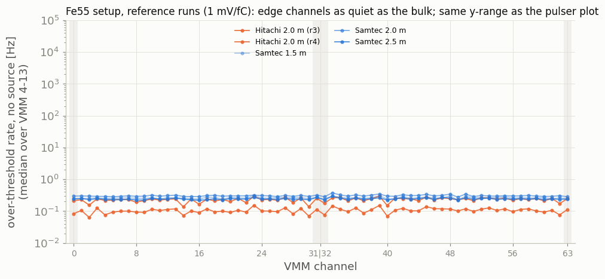
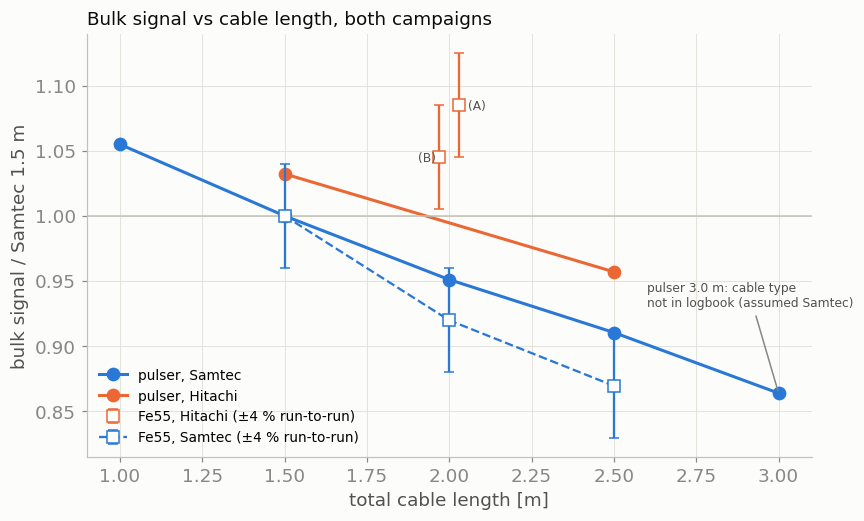
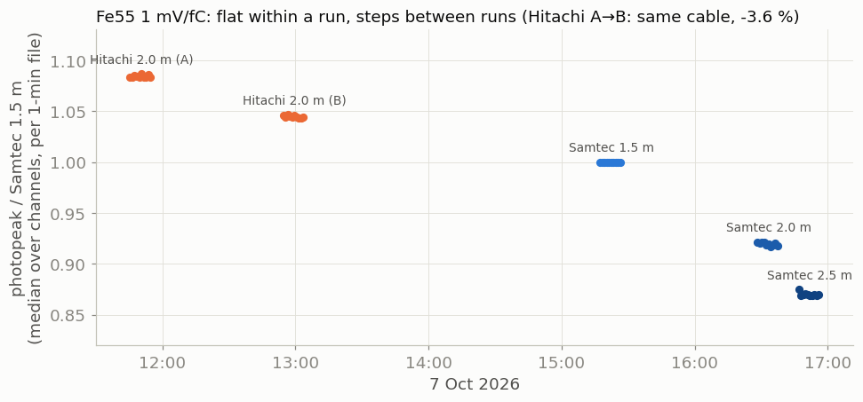

Cable length and edge channels: pulser bench vs Fe55
The pulser edge-channel 'breakdown' on long off-detector cables is self-triggering noise, not signal loss; no edge effect with Fe55 on the P2 detector
Bottom line. On the pulser bench, the VMM channels at the connector borders (0/1, 29–31, 62/63) appear to "break down" with long cables. They don't lose signal: the real pulse amplitude on those channels is the same fraction of the bulk at every length. What changes is that they start self-triggering: 0.4–3 kHz with 2–3 m of Samtec, ~30 kHz with Hitachi 50 cm + 2 m. Those noise hits (ADC ≈ 120–180) drag any mean or median of the ADC spectrum down. With Fe55 on the P2 detector, the edge channels behave exactly like the bulk, both in photopeak and in noise. The cable attenuates the bulk signal by roughly 10 %/m (Samtec) in both campaigns.
Data
| Pulser bench (June 2026) | Fe55 on detector (Oct 2026) | |
|---|---|---|
| Signal | Zedboard pulser, 1 kHz, 120 ns, into every third channel at once (groups 3k / 3k+1 / 3k+2), pulser 1.8 / 2.5 / 3.3 V | Fe55 X-rays on the P2 pads, 1–3 pads per event; m410 / d750 |
| Cable | 50 cm injection + transmission (Samtec 50 cm–2.5 m, Hitachi 1 m and 2 m); lengths below are the total | single cable: Hitachi 2.0 m (two takes), Samtec 1.5 / 2.0 / 2.5 m |
| Electronics | hybrid 4118, VMM id 7, 3 mV/fC, 200 ns, SNG on | 5 hybrids, VMM 4–13, 1 and 3 mV/fC, SNG on |
| Input | converted hits trees (the June pcapng are owner-only) |
raw pcapng, decoded with vmm_decode |
1. Which channels are actually pulsed
In most June runs the labels 3k+1 and 3k+2 are swapped: config "3k+1" pulses VMM channels 2, 5, …, 62, and "3k+2" pulses 1, 4, …, 61. This is the "mismatch" noted in the logbook. The Hitachi 50 cm + 2 m runs (8 June, from 16:53) are not swapped. The analysis therefore detects the pulsed group from the data in every run. One run had no pulses at all and was dropped (Hitachi 50 cm + 2 m, 1.8 V, "3k+2", 17:05).
2. Pulser: amplitude does not depend on length at the edges
The pulse clock comes from clean bulk channels of the same run. Only hits within ±500 ns of a pulse count as signal; everything else counts as noise.

3. Pulser: what grows with length is self-triggering


4. Fe55 on the detector: no edge effect


5. Bulk signal vs length


Why the two campaigns disagree
- Different instability, not different attenuation. The pulser chain (pulser, 50 cm injection cable, joint, transmission cable, hybrid) turns unstable at the connector-edge pins once it is long. The same hybrids and cables on the detector do not. The detector-side source impedance and grounding are the obvious candidates, but these data cannot tell which.
- Observable. A mean or median over all hits of a channel mixes signal and noise. With a pulse clock, or with an Fe55 photopeak fit, the edge effect disappears.
- The 29 Sep Fe55 runs peak at ~860 ADC with 14 % of hits saturated. A truncated mean (300 < ADC < 1022) is biased there. Use the 7 Oct 1 mV/fC runs.
- In
alarrache.C, the ratio histogram has 60 bins over 0–64 but is filled for 64 channels, so the channel labels ofloss.pngare shifted.
Open points
- The origin of the amplitude dome (pulser fan-out vs VMM channel gain). The VMM internal test
pulse, or the
ACDC_Near_Pulserrun of 9 July, would settle it. - The cable type of the 50 cm + 2.5 m pulser runs is not in the logbook (assumed Samtec).
- Which channel of each group oscillates: rerun one long-cable configuration with SNG off.
Numbers (summary.txt) and how to reproduce
All numbers: summary.txt.
Code: P2_basket_analysis/cable_length/cable_length_study.py (commit 722b9aa). Data copied from
vmm_daplxa:/local/p2/p2data/{hybrid_performance,source_tests}.
python3 cable_length/cable_length_study.py [--refresh]